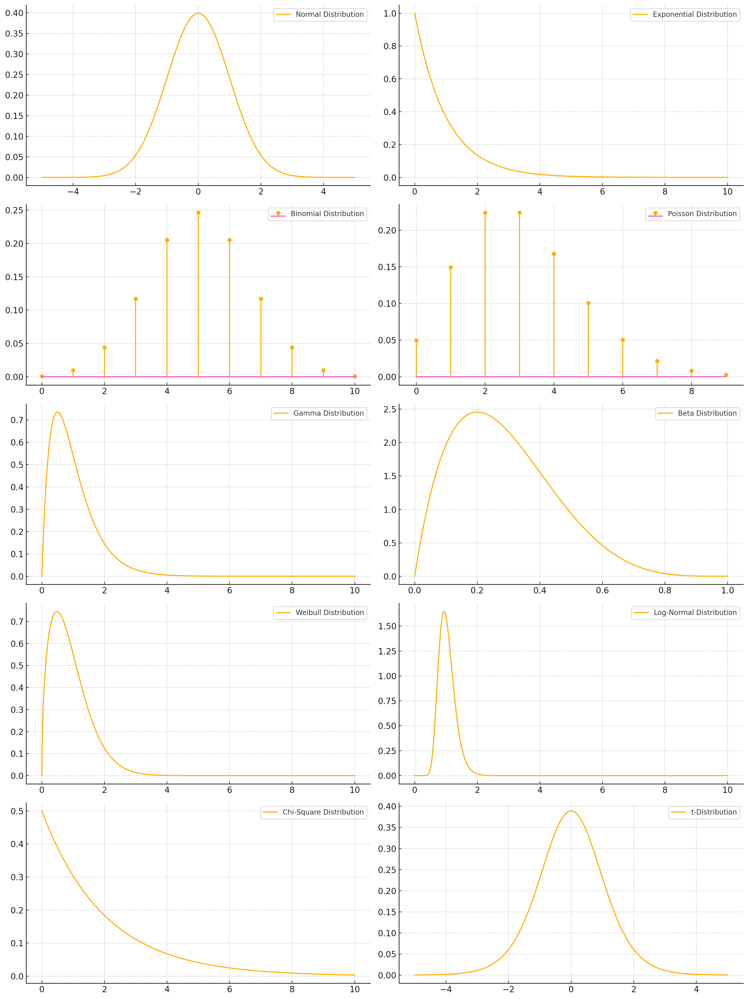

Parametric Density Estimation#
Parametric density estimation involves assuming that the underlying data distribution follows a specific parametric family of distributions and then estimating the parameters of that distribution from the given data.
Some parametric models and their parameters#
Normal Distribution (\(\mathcal{N}(\mu, \sigma^2)\))
Parameters:
\(\mu\): Mean of the distribution
\(\sigma^2\): Variance of the distribution
Where: Widely used in natural and social sciences.
Why: Many phenomena naturally follow a normal distribution due to the Central Limit Theorem, which states that the sum of a large number of independent, identically distributed variables will be approximately normally distributed.
Specific Applications and Contexts: Natural Sciences: Heights, weights, and test scores. Social Sciences: IQ scores, measurement errors.
Exponential Distribution (\(\text{Exp}(\lambda)\))
Parameter:
\(\lambda\): Rate parameter (inverse of the mean)
Where: Reliability engineering, queueing theory, and survival analysis. Why: Models the time between events in a Poisson process, such as the lifespan of an electronic component or the time until the next customer arrives.
Specific Applications and Contexts: Reliability Engineering: Time until failure of a machine component. Queueing Theory: Time between arrivals of customers at a service point.
Binomial Distribution (\(\text{Bin}(n, p)\))
Parameters:
\(n\): Number of trials
\(p\): Probability of success in each trial
Where: Quality control, clinical trials. Why: Models the number of successes in a fixed number of independent Bernoulli trials, such as the number of defective items in a batch or the number of patients responding to a treatment.
Poisson Distribution (\(\text{Pois}(\lambda)\))
Parameter:
\(\lambda\): Average number of events in a given interval
Usage: Models the number of events occurring within a fixed interval of time or space.
Gamma Distribution (\(\text{Gamma}(\alpha, \beta)\))
Parameters:
\(\alpha\): Shape parameter
\(\beta\): Rate parameter (inverse of scale)
Usage: Often used in Bayesian statistics as prior distributions.
Beta Distribution (\(\text{Beta}(\alpha, \beta)\))
Parameters:
\(\alpha\): Shape parameter
\(\beta\): Shape parameter
Usage: Commonly used to model random variables that are bounded between 0 and 1.
Weibull Distribution (\(\text{Weibull}(k, \lambda)\))
Parameters:
\(k\): Shape parameter
\(\lambda\): Scale parameter
Usage: Used in reliability engineering and failure analysis.
Log-Normal Distribution (\(\text{LogNorm}(\mu, \sigma^2)\))
Parameters:
\(\mu\): Mean of the log of the variable
\(\sigma^2\): Variance of the log of the variable
Usage: Models data that are positively skewed.
Chi-Square Distribution (\(\chi^2(k)\))
Parameter:
\(k\): Degrees of freedom
Usage: Commonly used in hypothesis testing and confidence interval estimation.
t-Distribution (\(t(\nu)\))
Parameter:
\(\nu\): Degrees of freedom

Estimation of Density Parameters#
We estimate parameters of density by Risk minimization in the Bayesian perspective.
Steps for Bayesian Risk Minimization#
Determine the Posterior Distribution: Compute the posterior distribution \(p(\theta | X)\) using Bayes’ theorem.
Define the Loss Function: Choose an appropriate loss function \(L(\theta, \theta^{*})\) based on the problem context.
Compute the Expected Posterior Loss: Integrate the loss function over the posterior distribution to get the expected loss for each possible action.
Minimize the Expected Loss: Select the action \(a^*\) that minimizes the expected posterior loss.
Zero-One Loss#
Sure, let’s substitute \( L(\theta, \theta^{*}) = 1 - \delta(\theta, \theta^{*}) \) into the given integral expression for \( R(\theta^{*} | X) \).
Given:
Substitute \( L(\theta, \theta^{*}) = 1 - \delta(\theta, \theta^{*}) \):
Now, let’s break this down into two separate integrals:
The first term is the integral of the probability density function \( p(\theta | X) \) over the entire domain of \( \theta \), which is equal to 1 (since it is a probability density function):
The second term involves the Kronecker delta function, which is 1 if \( \theta = \theta^{*} \) and 0 otherwise. Thus, the integral simplifies to evaluating \( p(\theta | X) \) at \( \theta = \theta^{*} \):
Putting it all together:
So the substituted expression is:
Bayesian Risk Minimization
To find the value of \(\theta^*\) that minimizes \(R(\theta^* | X)\), we can set up the optimization problem as follows:
Since we have:
we want to minimize \(1 - p(\theta^* | X)\). Minimizing this expression is equivalent to maximizing \(p(\theta^* | X)\) because 1 is a constant and does not affect the optimization.
Therefore, we have:
So the value of \(\theta^*\) that minimizes \(R(\theta^* | X)\) is the same as the value of \(\theta^*\) that maximizes \(p(\theta^* | X)\):
This is often referred to as the maximum a posteriori (MAP) estimate in Bayesian inference.
MAP estimation of Normal distribution parameters#
To solve for \(\mu\) and \(\sigma^2\) given a dataset \(\{x_1, \ldots, x_n\}\) under the normal distribution \(f(x|\mu,\sigma^2) = \frac{1}{\sqrt{2\pi\sigma^2}} \exp\left( -\frac{(x-\mu)^2}{2\sigma^2} \right)\), we will consider two cases: without prior knowledge (maximum likelihood estimation) and with prior knowledge.
Without Prior Knowledge (Maximum Likelihood Estimation)#
1. Maximum Likelihood Estimation for \(\mu\) and \(\sigma^2\):#
The likelihood function for the normal distribution is:
The log-likelihood function is:
To find the maximum likelihood estimates (MLE) of \(\mu\) and \(\sigma^2\), we take the partial derivatives of the log-likelihood function with respect to \(\mu\) and \(\sigma^2\) and set them to zero.
2. Estimating \(\mu\):#
Taking the derivative with respect to \(\mu\):
Solving for \(\mu\):
Thus, the MLE for \(\mu\) is the sample mean:
3. Estimating \(\sigma^2\):#
Taking the derivative with respect to \(\sigma^2\):
Solving for \(\sigma^2\):
Thus, the MLE for \(\sigma^2\) is the sample variance:
With Prior Knowledge (Bayesian Estimation)#
For Bayesian estimation, we need to specify prior distributions for \(\mu\) and \(\sigma^2\). We’ll assume conjugate priors to simplify the computations.
1. Prior for \(\mu\) and \(\sigma^2\):#
Assume the following priors:
\(\mu \sim \mathcal{N}(\mu_0, \sigma_0^2)\)
\(\sigma^2 \sim \text{Inverse-Gamma}(\alpha, \beta)\)
2. Posterior Distribution:#
The joint posterior distribution of \(\mu\) and \(\sigma^2\) given the data is proportional to the product of the likelihood and the priors:
3. Posterior for \(\mu\):#
Integrating out \(\sigma^2\), the posterior distribution for \(\mu\) given the data follows a normal distribution with updated parameters:
4. Posterior for \(\sigma^2\):#
The posterior distribution for \(\sigma^2\) given the data and \(\mu\) follows an inverse-gamma distribution with updated parameters:
At a Glance#
Without Prior Knowledge (MLE):
\[ \hat{\mu} = \frac{1}{n} \sum_{i=1}^{n} x_i \]\[ \hat{\sigma}^2 = \frac{1}{n} \sum_{i=1}^{n} (x_i - \hat{\mu})^2 \]With Prior Knowledge (Bayesian Estimation):
Posterior for \(\mu\):
\[ \mu | \{x_1, \ldots, x_n\}, \sigma^2 \sim \mathcal{N}\left( \frac{\sigma_0^2 \sum_{i=1}^{n} x_i + \sigma^2 \mu_0}{n \sigma_0^2 + \sigma^2}, \frac{\sigma_0^2 \sigma^2}{n \sigma_0^2 + \sigma^2} \right) \]Posterior for \(\sigma^2\):
\[ \sigma^2 | \{x_1, \ldots, x_n\} \sim \text{Inverse-Gamma}\left( \alpha + \frac{n}{2}, \beta + \frac{1}{2} \sum_{i=1}^{n} (x_i - \mu)^2 \right)\]
What is the Inverse-Gamma Distribution?#
The Inverse-Gamma distribution is a continuous probability distribution defined for positive real numbers. If a random variable \(X\) follows an Inverse-Gamma distribution with shape parameter \(\alpha\) and scale parameter \(\beta\), it is denoted as:
The probability density function (PDF) of the Inverse-Gamma distribution is given by:
for \(x > 0\), where \(\alpha > 0\) and \(\beta > 0\) are the shape and scale parameters, respectively, and \(\Gamma(\alpha)\) is the gamma function.
Why Use the Inverse-Gamma Distribution?#
Conjugacy:
In Bayesian statistics, conjugate priors are chosen because they simplify the computation of the posterior distribution. For the variance parameter \(\sigma^2\) of a normal distribution, the Inverse-Gamma distribution is conjugate to the normal likelihood. This means that if the prior for \(\sigma^2\) is an Inverse-Gamma distribution, the posterior distribution for \(\sigma^2\) will also be an Inverse-Gamma distribution. This conjugacy leads to analytically tractable forms for the posterior, making it easier to perform Bayesian inference.
Positive Support:
The Inverse-Gamma distribution is defined only for positive values, which is appropriate for variance parameters because variances must be positive.
Flexibility:
The Inverse-Gamma distribution is flexible and can model a wide range of prior beliefs about the variance parameter by adjusting its shape and scale parameters.
Example:#
We have a dataset for student grades in a pattern recognition course. We need to find the mean (μ) and standard deviation (σ) from the normal distribution in two scenarios: with and without prior information. For μ, we generally assume the prior is \( N(10, 2) \). However, for σ, we only know that it falls within a range, with the mean approximately 1 and the maximum value approximately 3. Therefore, the first step is to find the inverse gamma distribution using the following code:
import scipy.stats as stats
import scipy.optimize as optimize
# Target mean and extreme value
mean_target = 1
extreme_value = 3
# Function to solve for alpha and beta
def equations(params):
alpha, beta = params
mean_eq = beta / (alpha - 1) - mean_target
prob_eq = 1 - stats.invgamma.cdf(extreme_value, alpha, scale=beta) - 0.05 # 5% extreme value
return [mean_eq, prob_eq]
# Initial guess
initial_guess = [2, 1]
# Solve the equations
alpha, beta = optimize.fsolve(equations, initial_guess)
print(f"Alpha: {alpha}, Beta: {beta}")
Alpha: 1.6505255701202999, Beta: 0.6506534459879487
C:\Users\Dr\AppData\Local\Temp\ipykernel_19340\3248625107.py:19: RuntimeWarning: The iteration is not making good progress, as measured by the
improvement from the last ten iterations.
alpha, beta = optimize.fsolve(equations, initial_guess)
In the second step, we solve for μ and σ with and without prior information.
More Details#
Let’s go through the calculations for estimating \(\mu\) and \(\sigma^2\) for the dataset \(\{0, 1, \ldots, 20\}\) with and without prior knowledge. The priors are given as:
\(\mu \sim \mathcal{N}(10, 2^2)\)
\(\sigma^2 \sim \text{Inverse-Gamma}(1.6505255701202999, 0.6506534459879487)\)
Without Prior Knowledge (Maximum Likelihood Estimation)#
Given dataset: \(\{0, 1, \ldots, 20\}\)
Calculate the sample mean \(\hat{\mu}\):
Where \(n = 21\) (since there are 21 numbers from 0 to 20):
Calculate the sample variance \(\hat{\sigma}^2\):
Therefore:
So, the MLE estimates are:
With Prior Knowledge (Bayesian Estimation)#
Using the priors:
\(\mu \sim \mathcal{N}(10, 2^2)\)
\(\sigma^2 \sim \text{Inverse-Gamma}(1.6505255701202999, 0.6506534459879487)\)
Posterior for \(\mu\):
The posterior distribution for \(\mu\) given the data and \(\sigma^2\) is:
Given:
The posterior mean is:
Simplifying the posterior mean:
Posterior for \(\sigma^2\):
The posterior distribution for \(\sigma^2\) given the data and \(\mu\) is:
Given: $\( \alpha = 1.6505255701202999 \)$
The posterior parameters are:
Thus, the posterior distribution for \(\sigma^2\) is:
Final Results of Bayesian Estimates#
Posterior for \(\mu\): $\( \mu | \{0, 1, \ldots, 20\}, \sigma^2 \sim \mathcal{N}\left( \frac{840 + 210 \sigma^2}{84 + 21 \sigma^2}, \frac{4 \sigma^2}{84 + 21 \sigma^2} \right) \)$
Posterior for \(\sigma^2\): $\( \sigma^2 | \{0, 1, \ldots, 20\} \sim \text{Inverse-Gamma}(12.1505255701202999, 385.6506534459879487) \)$
In practice, to obtain point estimates from the posterior distributions, you might take the mean or mode of the posterior distributions. The mean of an inverse-gamma distribution \( \text{Inverse-Gamma}(\alpha, \beta) \) is given by \( \frac{\beta}{\alpha - 1} \) (for \( \alpha > 1 \)):
Posterior mean for \(\sigma^2\):
\[ \mathbb{E}[\sigma^2 | \{0, 1, \ldots, 20\}] = \frac{385.6506534459879487}{12.1505255701202999 - 1} \approx 35.78 \]
Thus, the Bayesian estimates are approximately:
\(\hat{\mu} \approx 10\) (due to the symmetric nature of the normal prior and the data)
\(\hat{\sigma}^2 \approx 35.78\)
import numpy as np
import scipy.stats as stats
import scipy.optimize as optimize
from scipy.stats import invgamma
# Generate some example data
data = np.array([10, 12, 11, 9, 8, 13, 10, 11])
# Prior information for μ
prior_mu_mean = 17
prior_mu_std = 0.1
# Target mean and extreme value for σ
prior_sigma_mean = 1
prior_sigma_max = 3
# Function to solve for alpha and beta
def equations(params):
alpha, beta = params
mean_eq = beta / (alpha - 1) - prior_sigma_mean
prob_eq = 1 - stats.invgamma.cdf(prior_sigma_max, alpha, scale=beta) - 0.05 # 5% extreme value
return [mean_eq, prob_eq]
# Initial guess for alpha and beta
initial_guess = [2, 1]
# Solve the equations
alpha, beta = optimize.fsolve(equations, initial_guess)
print(f"Alpha: {alpha}, Beta: {beta}")
# Estimate parameters without prior
data_mean = np.mean(data)
data_std = np.std(data, ddof=1)
print("\nWithout Prior:")
print(f"Mean (μ): {data_mean}")
print(f"Standard Deviation (σ): {data_std}")
# Estimate parameters with prior
# For μ ~ N(prior_mu_mean, prior_mu_std^2)
n = len(data)
mu_posterior_mean = (prior_mu_mean / prior_mu_std**2 + n * data_mean / data_std**2) / (1 / prior_mu_std**2 + n / data_std**2)
mu_posterior_std = np.sqrt(1 / (1 / prior_mu_std**2 + n / data_std**2))
# Calculate the posterior parameters for the inverse gamma distribution
alpha_post = alpha + n / 2
beta_post = beta + np.sum((data - data_mean)**2) / 2
# Sample from the posterior inverse gamma distribution
sigma_posterior_samples = invgamma.rvs(alpha_post, scale=beta_post, size=10000)
sigma_posterior = np.sqrt(np.mean(sigma_posterior_samples**2))
print("\nWith Prior:")
print(f"Posterior Mean (μ): {mu_posterior_mean}")
print(f"Posterior Standard Deviation (μ): {mu_posterior_std}")
print(f"Posterior Standard Deviation (σ): {sigma_posterior}")
Alpha: 1.6505255701202999, Beta: 0.6506534459879487
Without Prior:
Mean (μ): 10.5
Standard Deviation (σ): 1.6035674514745464
With Prior:
Posterior Mean (μ): 16.80387931034483
Posterior Standard Deviation (μ): 0.09847982464479192
Posterior Standard Deviation (σ): 2.3562085924241094
C:\Users\Dr\AppData\Local\Temp\ipykernel_19340\1516641445.py:28: RuntimeWarning: The iteration is not making good progress, as measured by the
improvement from the last ten iterations.
alpha, beta = optimize.fsolve(equations, initial_guess)
Interesting for All Students#
To correct or bias the grades using the calculated posterior mean (μ) and standard deviation (σ) obtained by incorporating prior information, outline of the method is:
1. Obtain the Posterior Mean and Standard Deviation#
First, you calculate the posterior mean (μ) and standard deviation (σ) using prior information as outlined previously. The formulas are:
Posterior mean of μ: $\( \mu_{\text{posterior}} = \frac{\frac{\mu_0}{\sigma_0^2} + \frac{n \cdot \mu_{\text{ML}}}{\sigma_{\text{ML}}^2}}{\frac{1}{\sigma_0^2} + \frac{n}{\sigma_{\text{ML}}^2}} \)$
Posterior standard deviation of μ: $\( \sigma_{\mu_{\text{posterior}}} = \sqrt{\frac{1}{\frac{1}{\sigma_0^2} + \frac{n}{\sigma_{\text{ML}}^2}}} \)$
2. Correct the Data#
To bias or correct the data, you need to adjust each data point based on the posterior mean and standard deviation. The adjustment involves shifting and scaling the data points.
3. Correction Formula#
Given an original data point \(x_i\), the corrected data point \(x_i'\) can be calculated as follows:
Simple code is:
import numpy as np
import scipy.stats as stats
import scipy.optimize as optimize
from scipy.stats import invgamma
# Generate some example data
data = np.array([10, 12, 11, 9, 8, 13, 10, 11])
# Prior information for μ
prior_mu_mean = 17
prior_mu_std = 1
# Target mean and extreme value for σ
prior_sigma_mean = 1
prior_sigma_max = 3
# Function to solve for alpha and beta
def equations(params):
alpha, beta = params
mean_eq = beta / (alpha - 1) - prior_sigma_mean
prob_eq = 1 - stats.invgamma.cdf(prior_sigma_max, alpha, scale=beta) - 0.05 # 5% extreme value
return [mean_eq, prob_eq]
# Initial guess for alpha and beta
initial_guess = [2, 1]
# Solve the equations
alpha, beta = optimize.fsolve(equations, initial_guess)
print(f"Alpha: {alpha}, Beta: {beta}")
# Estimate parameters without prior
data_mean = np.mean(data)
data_std = np.std(data, ddof=1)
print("\nWithout Prior:")
print(f"Mean (μ): {data_mean}")
print(f"Standard Deviation (σ): {data_std}")
# Estimate parameters with prior
# For μ ~ N(prior_mu_mean, prior_mu_std^2)
n = len(data)
mu_posterior_mean = (prior_mu_mean / prior_mu_std**2 + n * data_mean / data_std**2) / (1 / prior_mu_std**2 + n / data_std**2)
mu_posterior_std = np.sqrt(1 / (1 / prior_mu_std**2 + n / data_std**2))
# Calculate the posterior parameters for the inverse gamma distribution
alpha_post = alpha + n / 2
beta_post = beta + np.sum((data - data_mean)**2) / 2
# Sample from the posterior inverse gamma distribution
sigma_posterior_samples = invgamma.rvs(alpha_post, scale=beta_post, size=10000)
sigma_posterior = np.sqrt(np.mean(sigma_posterior_samples**2))
print("\nWith Prior:")
print(f"Posterior Mean (μ): {mu_posterior_mean}")
print(f"Posterior Standard Deviation (μ): {mu_posterior_std}")
print(f"Posterior Standard Deviation (σ): {sigma_posterior}")
# Correct the data using the posterior mean and standard deviation
corrected_data = mu_posterior_mean + (data - data_mean) / data_std * sigma_posterior
print("\nCorrected Data:")
print(corrected_data)
Alpha: 1.6505255701202999, Beta: 0.6506534459879487
Without Prior:
Mean (μ): 10.5
Standard Deviation (σ): 1.6035674514745464
With Prior:
Posterior Mean (μ): 12.081081081081082
Posterior Standard Deviation (μ): 0.4931969619160719
Posterior Standard Deviation (σ): 2.338350436470451
Corrected Data:
[11.35197223 14.26840763 12.81018993 9.89375454 8.43553684 15.72662532
11.35197223 12.81018993]
C:\Users\Dr\AppData\Local\Temp\ipykernel_19340\2875037383.py:28: RuntimeWarning: The iteration is not making good progress, as measured by the
improvement from the last ten iterations.
alpha, beta = optimize.fsolve(equations, initial_guess)
Some Experiments#
Main Data:
Prior Information for \( \mu \):
prior_mu_mean = 17
prior_mu_std = 0.1
Corrected Data: $\( 16.07820141, 18.98091301, 17.52955721, 14.62684561, 13.17548981, 20.43226882, 16.07820141, 17.52955721 \)$
Prior Information for μ:
prior_mu_mean = 17
prior_mu_std = 1
Corrected Data: $\( 11.35213662, 14.26791445, 12.81002554, 9.89424771, 8.4363588, 15.72580337, 11.35213662, 12.81002554 \)$
These experiments demonstrate that the certainty of the prior shifts all data towards the mean of the prior. If the prior has uncertainty, the main data returns to its original values.